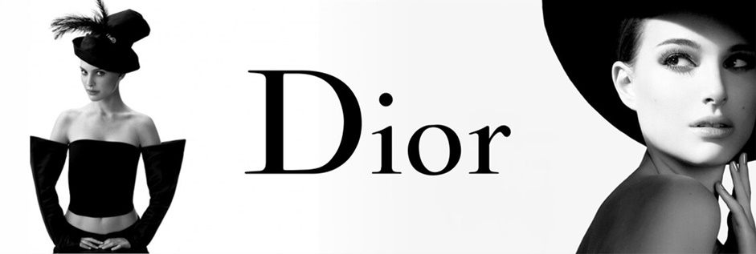

Fashion houses
Christian Dior | Gucci | Chanel
Christian Dior
- Founded: 1946, Avenue Montaigne, 30, Paris
- Founder: Christian Dior
- Style: bold tailoring, luxurious fabrics, couture silhouettes
- Colors: calm tones — black, white, gray, smoky gray, beige
- Details: light embroidery, emphasis on cut rather than print
- Philosophy: hairstyle, shoes, accessories and fragrance are important
- Notable fragrances: Miss Dior (1947), Diorama, Diorissimo

Official site: Dior.com
Gucci
- Founded: 1921, Florence, Italy
- Founder: Guccio Gucci
- Style: eclectic prints, bold patterns, mix of heritage and avant-garde
- Materials & Colors: saturated colors, velvet, suede, branded motifs (green/red stripes, GG, horse harness)
- Philosophy: clothes as a way to express individuality
- Notable fragrances: Gucci Bloom (jasmine, tuberose, ranunculus)
Official site: Gucci.com
Chanel
- Founded: 1910, Paris
- Founder: Gabrielle "Coco" Chanel
- Style: timeless elegance, minimalist silhouettes, luxury through simplicity
- Colors: black, white, beige, gold, navy blue
- Iconic pieces: little black dress, tweed suit, pearls, felt hat
- Philosophy: comfort and convenience are real luxury
- Notable fragrances: Chanel No. 5 (1921), Coco Mademoiselle, Chance
Official site: Chanel.com
Back to top